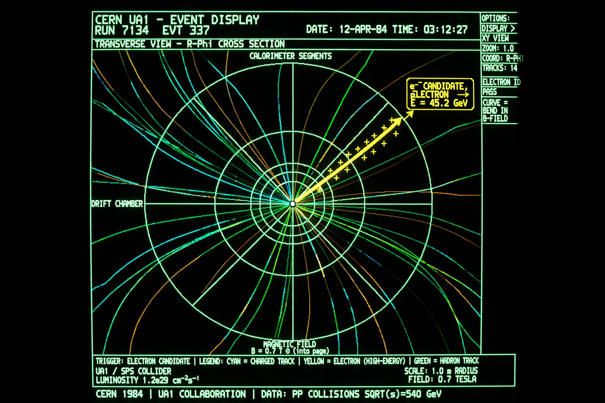

W and Z bosons
| Masses | W: 80.4 GeV/c²; Z: 91.2 GeV/c² |
|---|---|
| Discovered | 1983, CERN (UA1 and UA2) |
| Key figures | Carlo Rubbia, Simon van der Meer |
| Force | Weak interaction |

[Image: Event display from the UA1 detector showing a W boson decay]In particle physics, the W and Z bosons are vector bosons that are together known as the weak bosons or more generally as the intermediate vector bosons. These elementary particles mediate the weak interaction; the W bosons are electrically charged (W⁺ and W⁻) and the Z boson is neutral (Z⁰). Their large masses (comparable to atoms of silver) make the weak force short-ranged.
Predicted by the electroweak theory of the 1960s — their masses follow from the Higgs mechanism and the weak mixing angle — the W and Z were discovered at CERN in 1983 by the UA1 and UA2 experiments, led by Carlo Rubbia and using Simon van der Meer's stochastic cooling to build an antiproton beam. Rubbia and van der Meer received the 1984 Nobel Prize in Physics.
Role in the weak interaction
The W boson mediates charged-current processes: beta decay (a neutron's down quark changes to an up quark, emitting a virtual W⁻ that becomes an electron and antineutrino) and the fusion reactions of stars. The Z mediates neutral currents, in which particles scatter by Z exchange without changing flavour — first observed in the Gargamelle bubble chamber at CERN in 1973, a landmark confirmation of electroweak unification.
Precision physics
In 1989–2000 the LEP collider at CERN produced millions of Z bosons on resonance, measuring its mass (91.1876 GeV) and width to extraordinary precision and counting, from the invisible width, exactly three light neutrino species. Precision W-mass measurements remain a sensitive probe for physics beyond the Standard Model; a 2022 measurement by the CDF collaboration at Fermilab reported a value in tension with the Standard Model expectation, a result still under scrutiny.